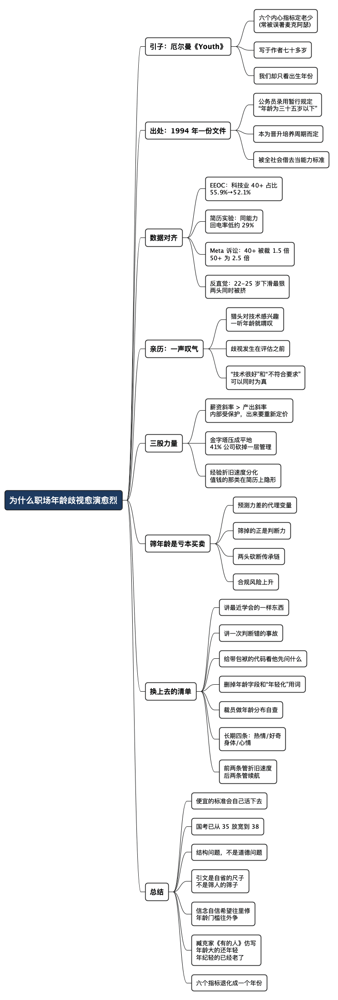

为什么职场年龄歧视愈演愈烈
Posted on 六 15 8月 2026 in Journal
| Abstract | 为什么职场年龄歧视愈演愈烈 |
|---|---|
| Authors | Walter Fan |
| Category | Journal |
| Version | v1.5 |
| Updated | 2026-08-15 |
| License | CC-BY-NC-ND 4.0 |
为什么职场年龄歧视愈演愈烈
You are as young as your faith, as old as your doubt;
as young as your self-confidence, as old as your fear;
as young as your hope, as old as your despair.你有多少信念就有多年轻，有多少疑虑就有多老；
有多少自信就有多年轻，有多少畏惧就有多老；
有多少希望就有多年轻，有多少绝望就有多老。
—— 塞缪尔·厄尔曼（Samuel Ullman），《Youth》
这话写于作者七十多岁的时候。很多人以为是麦克阿瑟说的——他把这首诗裱起来挂在东京办公室的墙上，也常在演讲里引用，署名就慢慢挂到了他头上。真正的作者是美国伯明翰的一位犹太拉比兼商人，因为听力衰退退出商界后开始写诗（UAB 厄尔曼博物馆、维基百科）。同一篇里还有更狠的一句：当心里那座无线电台的天线倒下、盖上愤世嫉俗的冰雪，“二十岁也已经老了”。
一个七十岁的人写下这些话，一个将军把它挂在墙上，战后的日本人从里面找到了重建的心气。衰老是心态问题，不是年份问题——这个道理，一百多年前就有人讲清楚了。
那么，现在轮到扎心的部分。
我们的招聘市场用的是另一套标准：招聘里那条“35 岁以下”，是有确切出处的。1994 年，原人事部发布《国家公务员录用暂行规定》，报考条件第六项写着“身体健康，年龄为三十五岁以下”（规定原文）。1989 年试点的时候还没这一条。这个数字后来被事业单位和企业广泛沿用，《人民日报》去年也把“35 岁门槛”的源头指向了这份文件（2025-10-30）。
厄尔曼用六个内心指标来判断一个人老没老；我们的招聘系统只用一个出生年份。而那个年份的门槛，本来只是为了公务员“逐级晋升培养周期”定的一个行政条件，被整个劳动力市场借去当了能力标准，借了三十年。
我想说的是：年龄歧视加剧，不是一个简单的道德判断可以解释的，而是三样东西同时在变——薪资曲线、组织形状、技术保质期。歧视是这三股力量挤出来的结果，只把它归结为道德问题，骂完什么也不会改变。
这篇写给两边的人，因为这件事只有一半的账在对面手里。
给做招聘和裁员决定的人：我不打算劝你善良，只想说清一件更实在的事——用年龄当筛子，是一笔算得出来的亏本买卖，后面给一份能替换它的筛选清单。
给正被这条线卡着的人：我也不打算给你打鸡血。看懂上面那三股力量，本身就有用——它能帮你分清哪部分是你的问题、哪部分不是。分不清的人容易走向两个极端：要么全怪大环境，什么都不做；要么全怪自己，越努力越怀疑人生。后面也有一份给你的清单，重点是怎么把“年头”翻译成对方看得懂、也算得清的东西。
先说清一件事：看懂机制不等于认命。恰恰相反，知道一堵墙是怎么砌起来的，才知道该从哪儿翻、哪儿绕、哪儿该推。
一、先把现象和数据对齐
有些流传的数字并不可靠，所以我只用能核实的。
美国，官方口径。EEOC 那份 2024 年的行业报告显示，高科技行业 40 岁以上从业者的占比从 2014 年的 55.9% 降到 2022 年的 52.1%，跌到了全美劳动力平均值（53.1%）以下；同时 25–39 岁在科技行业占 40.8%，全行业只占 33.1%（High Tech, Low Inclusion）。科技业不只是年轻，而且在变得更年轻。
招聘环节，实验证据。这类事最难的是分清“歧视”和“能力差异”，经济学家用简历对照实验解决了：投出内容相同、只改年龄的假简历，比回电率。Neumark 等人投了四万多份，结论是中年和高龄申请人的回电率显著更低——某个类别里，29–31 岁回电率 14.4%，49–51 岁降到 10.3%，低了约 29%（NBER 工作论文）。同样的能力，换个出生年份，机会少三成。
裁员环节，诉讼里的数字。Meta 一位 54 岁被裁的原高管起诉称，公司内部数据显示 40 岁以上被裁概率是年轻同事的 1.5 倍，50 岁以上是 2.5 倍（报道）。这是原告主张，法院还没认定，但它至少说明一件事：这类模式已经开始留下可诉的痕迹。
但这里有个反直觉的发现，不说就不诚实。斯坦福数字经济实验室用 ADP 的高频数据发现，在最受 AI 冲击的岗位（软件开发是典型）里，就业下滑最厉害的是 22–25 岁的年轻人，而同期更资深的年龄组就业还在增长（Canaries in the Coal Mine?）。行业媒体的总结更直白：两头都在被挤——20 多岁的入门岗和 40 岁以上的中年人同时被往外推（LeadDev）。
所以准确的说法不是“公司偏爱年轻人”，而是：公司在收缩成一个只留中段的形状。这个判断比“歧视中年人”更难听，因为它意味着两代人在为同一件事付账。
数字之外，是一句叹气
上面这些数字都是从外面看的。这件事从里面看是什么样，我两年前写过一篇《大龄程序员尚能饭否》，记下了当时找工作的一段经历：
不止一位 HR 直接告诉我年龄太大了，不符合他们的岗位要求。有猎头初始对我的技术和经历很有感兴趣，一听说我的年龄，就喟叹年龄太大了。
我一直记得那声叹气。它的意思不是“你不行”，而是“你行，但我这条通道过不去”——那位猎头对技术和经历是真感兴趣的，他叹的是自己手上那份筛选条件。
这恰好印证了前面那个回电率实验：歧视不一定发生在评估能力的环节，它往往发生在评估之前。你的能力压根没进入考察范围，就已经在简历筛选那一层被拦下了。所以一个人可以同时被两句话形容——“技术很好”和“不符合要求”——而且这两句话都是真的。
那篇文章里我还写过一句当时的困惑：“咱岁数大，可是咱会得多呀……怎么到了国内的软件行业，大龄程序员竟然被人嫌弃如斯。”
两年后再看，这篇文章就是我给自己那个问题补的答案：不是“被谁嫌弃”，而是三股力量同时挤过来的结果。下面就说这三股。
二、三股力量：为什么它现在加剧
第一股：薪资往上走，产出没有同步
这是最硬的一条，也是最不体面的一条。
经济学界对此有相当一致的结论：工资和福利随年龄上升，但没有确凿证据表明生产率同步上升——OECD 2025 年就业展望和 NBER 的综述都是这个口径（OECD、NBER w26597）。注意这话的分寸：它没说资深的人产出更低，它说的是涨薪的斜率比产出的斜率陡。
更关键的是这个缺口在什么时候被引爆。工资的资历斜率有个隐含契约：年轻时拿得比产出少，年长时拿得比产出多，用后半段补前半段，公司借此留人。荷兰的匹配数据研究点出了要害——在原公司，你受资历规则保护；一旦进了招聘市场，这层保护就没了，雇主要按当下的性价比重新给你定价（Tilburg 研究）。德国的数据更狠：资历工资斜率越陡的企业，留人越久，但越不愿意招年长的求职者（EconStor）。
这解释了一个很多人想不通的事：为什么在公司里还挺受尊重，一出来找工作就撞墙。不是你突然变差了，是你从“受保护的内部人”变成了“要现场议价的外部人”。而经济一收缩，裁员先从单价高的开始，几乎是必然。
第二股：金字塔被压成了平地
过去“资深”有个自然出口——往管理走。这条路现在正在被拆。
Korn Ferry 2025 年的调研覆盖 10 个市场、1.5 万多人，41% 的人说自己公司砍掉了管理层级，另有 37% 的人因为经理没了而感到“没了方向”（Korn Ferry Workforce 2025）。Google 在 2024 年底砍了约 10% 的 VP 和管理岗，微软、亚马逊、Intel 都在提高“管理跨度”，也就是每个经理带更多人（Business Insider）。
这一层的后果，我觉得比薪资那层更伤：它不是让升迁变慢了，是把台阶直接拿走了。
以前的隐性约定是：写代码写到一定年纪，转去带团队，年龄自然变成资产。现在中间层被压掉，路线图变成了“要么进极窄的高级 IC 通道，要么出局”。一个原本靠年头就能兑现的期待，突然要靠稀缺性才能兑现。很多人的焦虑其实来自这里——不是干不动了，是路没了。
第三股：经验的保质期在缩短
这条最容易被说成鸡汤，但它有个具体的机制：技术迭代不是让经验贬值，而是让经验的“折旧速度”分化了。
有些经验几乎不折旧：怎么排查一个只在生产环境出现的故障、怎么判断一个架构三年后会烂在哪、怎么在需求含糊时问出真问题、怎么让一个团队敢说坏消息。有些经验折旧极快：某个框架的具体 API、某套工具链的配置技巧、某个平台特有的坑。
麻烦在于，简历上写的往往是折旧快的那一类，而真正值钱的是折旧慢的那一类。筛简历的人看到的是“精通 XX 框架”，看不到“这人能在半夜三点判断该回滚还是该往前修”。于是那些折旧慢的能力，在招聘漏斗里几乎是隐形的。
顺便说个有意思的证据。METR 那个受控实验发现，有经验的开源开发者在用 AI 工具时，任务实际慢了 19%，而他们自己以为快了 20%（报道）。这不是说 AI 没用，而是说在成熟系统、老代码、严格架构约束下，AI 生成的东西需要人去验证，而验证成本恰恰只有资深的人付得起。AI 时代资深工程师的价值，正在从“写得出来”转向“看得出哪里不对”。
这一条我两年前写那篇文章时就摸到了边，当时的说法是：“大龄程序员不要重复自己，而要不断进取，与时俱进，必须要给自己的工作挖点护城河，提高点门槛，多做点年轻人搞不懂也搞不定的事情。”
当时那句“挖护城河”更像是一句自我鼓励，我说不清护城河到底该挖在哪。现在我能说清了：护城河就挖在折旧慢的那一侧。框架和工具是流沙，判断和事故经验才是石头。这个区分不只是安慰自己的说法，它直接决定了简历该怎么排、面试该讲什么——后面那份清单说的就是这件事。
三、为什么筛年龄是亏本买卖
上面三股力量解释了歧视为什么加剧，但“可以理解”不等于“划算”。站在做决定的人的角度，用年龄当筛子有四笔账要付：
第一笔，它是个极差的预测指标。年龄跟“学习意愿、精力、代码质量”的相关性，远低于直接考察这些东西本身。你本来可以测的东西，为什么要用一个噪声很大的代理去猜？这在筛选设计上属于低级错误。
第二笔，它筛掉的恰好是你最缺的能力。团队里最贵的不是写代码，是判断。半夜三点决定回滚还是往前修、方案评审时看出哪个假设站不住、什么时候敢说“这个需求我们不做”——这些能力没有速成班，只能靠在关键位置上待过、并且为后果负过责。OECD 的报告也提到，年龄结构更均衡的企业有正向的生产率效应（OECD）。
第三笔，两头一起砍会砍断传承链。这是前面那个反直觉数据的真正代价：初级岗因为 AI 被压缩，资深岗因为贵被优化，那中间那段人几年后从哪来？你今天不招年轻人，五年后就没有中生代；你今天送走资深的人，今天就没人带人。这笔账不出现在本季度的报表上，所以它最容易被花掉。
第四笔，合规风险在上升。中国的劳动法和就业促进法明确列举的歧视类型里暂时没有“年龄”，但就业促进法用了个“等”字，留了口子（法治日报）。2024 年 9 月中共中央、国务院的文件已经提出“消除地域、身份、性别、年龄等影响平等就业的不合理限制和就业歧视”（新华社）。
而且风向已经在转了。2026 年度国考公告把报考年龄上限从 35 周岁提到了 38 周岁，应届硕博放宽到 43 岁以下——这是国考多年来首次放宽这条线（法治日报）。上海、安徽等地的部分招录也已经改到 38 岁。
这件事的分量在于：当年那个“35 岁”就是从公务员招录扩散到全社会的，现在源头自己动了。规则的传播是双向的。
同一笔账，从求职这边看
上面那些是雇主的账。同样这套机制，从找工作的人这边看过去，能得出几条比“努力就好”实在得多的判断。
先说最要紧的一条：你撞的那堵墙，有一部分不是你的。回电率实验那个数字值得抄下来——同样的能力，换个出生年份，机会少约三成。理解这件事的用处很实在，就是止损：投递被拒的次数不该拿来当能力评估的结果。该复盘的是投递策略和自我表述，不是自我价值。
其次，你贵的往往不是年龄，是薪资锚点。前面说的“内部受保护、出来要重新定价”，其实点出了真正的谈判对象——很多所谓年龄门槛，是薪资预算门槛披了层年龄的皮。所以你得说得清自己贵在哪（贵在判断和兜住风险，不是贵在年头），也得想清楚什么条件下接受重新定价。把“他们嫌我老”翻译成“我们在争一个价格”，这场对话就从没法谈变成了可以谈。
再者，你手里握着雇主最容易算漏的那笔账：判断力、带人、传承。但漏算的责任不全在他们——这些东西在简历上几乎是隐形的。能不能让它显形，是你自己的活儿，也是下一节那份清单要解决的事。
最后，风向确实在变，但别把身家押在它上面。国考从 35 到 38、多地跟进、中央文件点了“年龄”，趋势是真的。可趋势按年走，房贷按月还。遇到明显歧视，投诉这条路是有的（新华社那篇提到了路径）；同时该经营的还得自己经营。指望大环境先好起来再动手，等于把自己的时间押在别人的日程表上。
四、两份清单：一份换筛子，一份改自述
这一节有意思的地方在于：两边要做的其实是同一件事的两面——把折旧慢的能力变成看得见的东西。招聘方缺的是能测它的题目，求职者缺的是能证它的说法。所以下面两份清单，题目和答案是对着的。
给招聘方：把年龄这一栏换成四个可观察的信号
- 最近一年学会的一样新东西，讲十分钟。要能讲清为什么学它、卡在哪、怎么解决的。这直接测学习能力，比出生年份准得多。
- 让他讲一次自己判断错的事故。要具体：当时看到什么、为什么判断错、后来怎么改的流程。答不上来的人，通常没在关键位置上待过。
- 给一段真实的、带历史包袱的代码，问他会怎么动。看他先问什么问题——问业务约束和回滚方案的，和直接开始重写的，不是一个段位。
- 问他最近一次说“这个我们不做”是什么时候。测的是判断力和担当，这条几乎无法背题。
同时，把三件事从流程里删掉：
- 简历初筛的年龄字段和年龄区间过滤器（隐性的算法过滤同样算）
- JD 里“年轻化团队”“有活力”这类词——Neumark 那组研究专门做过：招聘广告里的年龄刻板印象用词，和实际的年龄歧视程度是相关的（NBER w26552）
- “35 岁以下”这种从别处抄来的硬门槛。你要真正在意的是薪资预算，那就直接谈薪资预算——用年龄代替谈钱，是既得罪人又筛错人的做法
裁员时，至少做一次统计自查。把被裁名单的年龄分布和裁员前全员的年龄分布放在一起看。如果两个分布明显不一样，而你说不出与年龄无关的理由，那这个决定在法律上和管理上都站不住。这不只是合规动作，它也是发现自己筛选标准跑偏的最快办法。
给求职者：把年头翻译成对方算得清的东西
上面那四道题，其实就是四个可以主动交付的答案。别等对方来问——很多面试官压根不会问，他们只会在心里给你的年龄扣分。
- 准备一个“最近学会的东西”，讲得出细节。不是列一串新名词，是讲清为什么学、卡在哪、怎么过去的。这是对“学不动了”这个默认怀疑最直接的反证，而且它只能来自真做过的事。
- 准备一个“我判断错过一次”的故事。当时看到什么、为什么错、后来改了什么流程。这个故事年轻人编不出来，因为它需要你当时在那个位置上、并且要为后果负责。它同时展示了三样东西：经历过真事、能自省、改过流程。
- 把简历重排一遍：折旧慢的往前，折旧快的往后。你主导过的判断、处理过的事故、说过“不做”的需求、带出来的人，放前面；框架和工具列表放后面。前者是你的护城河，后者是年轻人两周就能追上的部分。
- 提前把薪资区间摊开谈。既然很多年龄门槛其实是预算门槛，那就别让对方靠猜。把话说到明处，你至少能知道自己是败在钱上还是败在偏见上——这两件事的应对方式完全不同。
还有两条关于选择的：
- 优先去会问上面那四个问题的公司。面试里问不问“你判断错过什么”，几乎是个公司成熟度的探针。会问的，说明它真的在评估判断力；只关心你几年出生、能不能加班的，进去了也一样难受。
- 遇到明显的年龄歧视，投诉这条路是存在的。新华社那篇明确提到可以向劳动监察部门投诉，专家也在呼吁建立申诉途径和算法审计（新华社）。这条路现在还不好走，但走的人多了才会好走一点。
上面这些是应付面试的战术。而更长期的一层，两年前那篇文章的结尾我给自己列过四条，今天看还是那四条，一个字不用改：保持对编程的热情、保持好奇心、保持一个好身体、保持一个好心情。
写下这四条时我刚经历过部门被整体裁撤，当时多少有点强打精神的意思。两年过去，我发现它们并不是安慰话，而是这场消耗战里真正的补给线：前两条决定你的折旧速度，后两条决定你能撑多久。
尤其第三条。热情和好奇心是能力问题，身体和心情是续航问题——而年龄歧视这件事，你不太可能一次性把它解决掉，只能比它耗得更久。能耗下去，靠的不是志气，是睡眠、锻炼和不把自己逼到崩掉。
一句话：
能力是可以直接测的，测不动的时候才会用年龄去猜。
所以对招聘方：用年龄筛人，本质上是承认自己不会评估能力。对求职者：让对方猜不到，是你自己的活儿。
总结：三十年前的一条行政规定，不该管到今天
回到开头那个发现。1994 年那份文件里的“35 岁以下”，本来只是为公务员的晋升周期定的一个行政条件。它被抄进无数份 JD，成了一代人的天花板，而当初制定它的人，大概根本没想过它会被这么用。
这就是最值得警惕的地方：一个便宜的筛选标准，一旦流行开，就会自己活下去，而且比它原本要解决的问题活得久。它省的是筛简历那几秒钟，付账的是几千万人的职业生涯。
现在源头已经松了口，从 35 到 38。松动的原因不是谁良心发现，是人口结构和退休年龄的现实压过来了。这也印证了我开头那个判断：这件事从头到尾都不是道德问题，是结构问题。结构变了，规则才会变。
所以对做决定的人，我只想说一句：那个数字不是从能力里长出来的，是从一份 1994 年的红头文件里抄出来的。你可以不抄。
再回到开头厄尔曼那段话，不过得把它用对。
它是给自己的尺子，不是给别人的筛子。用来自省很好：天线还立着吗，还是已经盖上了愤世嫉俗的冰雪？但不能拿它去衡量别人的处境——你不能对一个屡屡被拒的求职者说“你老是因为你有疑虑”。那是把结构问题推回给个人，跟本文全篇的论证正好相反。
信念、自信、希望，是自己可以经营的；年龄门槛，是别人替你划的线。前者往里修，后者往外争。两件事都得做，但别搞混了谁该为哪件负责。
说到这儿，我想起臧克家 1949 年那首《有的人》，开头四句几代人都背过：
有的人活着 他已经死了；
有的人死了 他还活着。——臧克家《有的人——纪念鲁迅逝世十三周年有感》，1949 年 11 月 1 日（全文见中国作家网）
他讲的是生死，我想把它挪来讲年龄：
有的人年龄大了，他还很年轻；
有的人年纪很轻，可他已经老了。
这两句话，跟厄尔曼说的其实是同一件事，只是中文更省字。臧克家用“活着”和“死了”这组词，恰好点出了要害：这两个字从来不是户口本上的记录，而是一种状态。年龄也一样。
不过还是那句话——这句诗用来照自己，别用来量别人。
厄尔曼那一代人用六个内心指标判断老没老，臧克家用一个人活成什么样来判断，我们退化到只看一个出生年份。这三十年，我们在这件事上是往回走的。
全文思维导图
@startmindmap
<style>
mindmapDiagram {
node {
BackgroundColor #F8F9FA
RoundCorner 10
Padding 10
FontSize 13
}
:depth(0) {
BackgroundColor #1E3A5F
FontColor white
FontSize 18
FontStyle bold
}
:depth(1) {
FontSize 15
FontStyle bold
}
:depth(2) {
FontSize 13
}
}
</style>
* 为什么职场年龄歧视愈演愈烈
** 引子：厄尔曼《Youth》
*** 六个内心指标定老少\n(常被误署麦克阿瑟)
*** 写于作者七十多岁
*** 我们却只看出生年份
** 出处：1994 年一份文件
*** 公务员录用暂行规定\n“年龄为三十五岁以下”
*** 本为晋升培养周期而定
*** 被全社会借去当能力标准
** 数据对齐
*** EEOC：科技业 40+ 占比\n55.9%→52.1%
*** 简历实验：同能力\n回电率低约 29%
*** Meta 诉讼：40+ 被裁 1.5 倍\n50+ 为 2.5 倍
*** 反直觉：22-25 岁下滑最狠\n两头同时被挤
** 亲历：一声叹气
*** 猎头对技术感兴趣\n一听年龄就喟叹
*** 歧视发生在评估之前
*** “技术很好”和“不符合要求”\n可以同时为真
** 三股力量
*** 薪资斜率 > 产出斜率\n内部受保护，出来要重新定价
*** 金字塔压成平地\n41% 公司砍掉一层管理
*** 经验折旧速度分化\n值钱的那类在简历上隐形
** 筛年龄是亏本买卖
*** 预测力差的代理变量
*** 筛掉的正是判断力
*** 两头砍断传承链
*** 合规风险上升
** 换上去的清单
*** 讲最近学会的一样东西
*** 讲一次判断错的事故
*** 给带包袱的代码看他先问什么
*** 删掉年龄字段和“年轻化”用词
*** 裁员做年龄分布自查
*** 长期四条：热情/好奇\n身体/心情
*** 前两条管折旧速度\n后两条管续航
** 总结
*** 便宜的标准会自己活下去
*** 国考已从 35 放宽到 38
*** 结构问题，不是道德问题
*** 引文是自省的尺子\n不是筛人的筛子
*** 信念自信希望往里修\n年龄门槛往外争
*** 臧克家《有的人》仿写\n年龄大的还年轻\n年纪轻的已经老了
*** 六个指标退化成一个年份
@endmindmap

行动清单
如果你在做招聘或裁员决定，今天能做三件事：
- 打开你手上在招的 JD，删掉年龄区间和“年轻化”“有活力”这类词。
- 把那四个问题加进面试题库，替换掉靠年龄做的隐性判断。
- 下次裁员前，把名单的年龄分布和全员分布对一遍，说不出与年龄无关的理由就重做。
如果你正被这条线卡着，也是三件事：
- 把简历重排：折旧快的（框架、工具）往后，折旧慢的往前——你主导过的判断、处理过的事故、说过“不做”的需求、带出来的人。这是年轻人抄不走的部分。
- 写下那个“我判断错过一次”的故事，写具体到流程改了哪一条。这个故事编不出来，所以它最值钱。
- 下次面试主动把薪资区间摊开谈。至少你能知道自己是败在钱上，还是败在偏见上——这两件事的应对完全不同。
两边共用的一条：别把“厚”和“年轻”当成加分项，也别把被拒的次数当成能力评估的结果。筛子的问题，不该记在被筛的人账上。
相关文章
- 《大龄程序员尚能饭否》（2024-01）——本文的前篇。那篇是刚被裁时的第一人称记录，带着情绪；这篇是两年后把资料查了一遍的冷静版。两篇一起读，大概能看出一个人从“这不公平”走到“这是怎么运作的”那段路。
本作品采用知识共享署名-非商业性使用-禁止演绎 4.0 国际许可协议进行许可。 欢迎在我的个人网站 https://www.fanyamin.com 访问原文并评论。